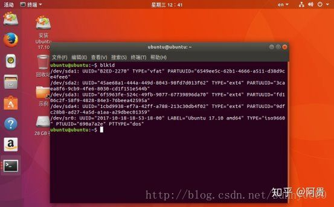

注意，使用tar而不要使用zip打包，因为tar可以选择保留linux的文件属性，包括用户权限信息等，这对于系统备份来讲很重要。
使用tar打包备份linux系统的命令是：
sudo tar -cpvzf /system_backup.tar.gz --exclude=/proc --exclude=/tmp --exclude=/lost+found --exclude=/media --exclude=/mnt --exclude=/run -P /
其中的 -cpvzf 里边的字母分别意味着create创建、privilege权限、verbose罗嗦模式、zip压缩、file文件。显然，可以关闭罗嗦模式，因为打包整个系统的过程设计的文件特别多，罗嗦模式会有特别多的信息显示出来，并且即便关闭了罗嗦模式错误信息（exception）也会照常显示，不影响排查错误。其他的选项对于八分系统来讲是必要的。
压缩（z，zip）不是真的必须，但是显然压缩一下有助于快速转移备份。
tar这个工具在收到f参数后，必须立马收到目的地文件的路径，所以f和文件路径必须紧紧相连。在上边的命令当中，f必须放在五个字母参数的最后，也就是f和文件路径之间自能有空格，不能有其他任何符号。
文件（夹）路径排除掉不应该打包的路径/proc：一个虚拟文件系统，系统运行的每一个进程都会自动在这个目录下面创建一个进程目录。既然是系统自动创建，也就没必要备份的必要了。 /tmp：一个临时文件夹，系统的一些临时文件会放在这里。 /lost+found：系统发生错误时（比如非法关机），可以在这里找回一些丢失文件。 /media：多媒体挂载点，像u盘、移动硬盘、windons分区等都会自动挂载到这个目录下。 /mnt：临时挂载点，你可以自己挂载一些文件系统到这里。 /run：系统从启动以来产生的一些信息文件。
/home：用户家目录，存放用户个人文件和应用程序。 /boot：和系统启动相关的文件，像grub相关文件都放在这里，这个目录很重要！
/是打包的源路径tar的最后一个参数是打包的源路径，也可以是多个路径的列表，备份系统的时候直接备份根路径/即可，但是由于它非常短，容易忽视，所以千万不要忘了。
其中的-P表示path，指定路径，而不是使用相对路径
打包了系统之后及时转移，使用cp source dest把备份文件（上边，的命令里它位于/）转移到别的位置。如果系统中挂载了存储设备，tar备份的时候也可以直接把目的文件放在该挂载位置，不一定放在根目录下。
系统备份的意义就在于系统哪天发生意外时可以系统还原拯救回来
这里有两种还原方式，如果你系统出问题了，但是还可以进入终端，那就可以直接解压备份文件进行还原。但是如果你连系统都不能登录了，就要使用LiveCD（U盘启动盘）进行还原了。
tar命令还原系统
x备份前先切换到root用户，避免权限问题$ sudo su再切换到/（根目录）# cd /还原tar -xvpzf /media/Disk/myDisk/ubuntu_backup@2016-6-6.tar.gz -C /注意先创建一个临时目录用于挂载你的/根目录分区，sdaX代表你的/根目录分区，如果不知道就用fdisk -l查看一下，另外如果你的移动硬盘没有被自动挂载，你也需要手动创建一个临时目录进行挂载。
Note：因为 tar还原是只会覆盖相同的文件，但是这种方法只是恢复备份时的文件，就是说如果某些文件丢失或损坏了，这样可以恢复修复这些文件，但不能删除自备份到恢复前这期间所生成的其它文件，说白了就是假如你备份系统时有1234这四个文件，如果三天后，由于某些原因变成了1234’5（4改变了），你恢复后，就会变成12345，其中4’恢复成备份时的文件，5保留。所以大家要是想彻底还原成备份时候的样子最好彻底删除根目录下的所有文件，然后再还原，这样就可以还原成备份时的样子了。 删除整个文件系统，比如运行命令rm -fr /*，那么你还原系统后一定要把你之前没有备份的目录手动创建，不然重启系统是有问题的。
xxxxxxxxxxmkdir proc tmp lost+found media mnt run
LiveCD 还原系统
xxxxxxxxxx#切换到root用户sudo su#进入到 / 目录cd /mkdir /mnt/sysmount /dev/sdaX /mnt/systar -xvpzf /media/myDisk/ubuntu_boot_backup@2016-6-6.tar.gz -C /mnt/sys执行恢复命令之前请再确认一下你所键入的命令是不是你想要的，执行恢复命令可能需要一段不短的时间。
恢复命令结束时，你的工作还没完成，别忘了重新创建那些在备份时被排除在外的目录： # mkdir proc # mkdir lost+found # mkdir mnt # mkdir sys 等等
当你重启电脑，你会发现一切东西恢复到你创建备份时的样子了！
PS：
还有一个稍微复杂点的livecd方式还原，如下：
先要对之前的启动文件和分区文件做一个备份，分别为/etc/fstab,/etc/fstab.d（可能没有，
/boot/grub/grub.cfg：
xxxxxxxxxx#cp /etc/fstab /media/用户名/移动硬盘对应盘符/#cp /boot/grub/grub.cfg /media/用户名/移动硬盘对应盘符/接下来进行恢复系统，同样利用系统u盘进入livecd模式。同样进入root模式，查看分区情况
假设分区情况如上：/dev/sda1为boot分区，/dev/sda2为主分区，/dev/sda3为home分区。对home分区和主分区进行格式化：
xxxxxxxxxx#sudo su#mkfs.ext4 /dev/sda2#mkfs.ext4 /dev/sda3然后分别进行挂载：
xxxxxxxxxx#mount /dev/sda2 /mnt新建home和boot文件:
xxxxxxxxxx#mkdir /mnt/home#mkdir /mnt/boot挂载其他两个盘：
xxxxxxxxxx#mount /dev/sda1 /mnt/boot#mount /dev/sda3 /mnt/home挂载数据盘：
xxxxxxxxxx#mkdir /rescovery/mnt#mkdir /rescovery/home#mkdir /rescovery/boot#mount -o loop /media/ubuntu/移动硬盘盘符/ubuntu_main.sfs /rescovery/mnt#mount -o loop /media/ubuntu/移动硬盘盘符/ubuntu_home.sfs /rescovery/home#mount -o loop /media/ubuntu/移动硬盘盘符/ubuntu_boot.sfs /rescovery/boot复制文件：
xxxxxxxxxx#cp -a /recovery/mnt/* /mnt#cp -a /recovery/home/* /mnt/home#cp -a /recovery/boot/* /mnt/boot然后拷贝之前的fstab和grub.cfg文件到硬盘：#cp /media/ubuntu/移动硬盘盘符/fstab /mnt/etc/#cp /media/ubuntu/移动硬盘盘符/grub.cfg /mnt/boot/grub/挂载虚拟文件系统，这是为了后面修复引导做准备。
xxxxxxxxxx#mount --o bind /dev /mnt/dev#mount --o bind /proc /mnt/proc#mount --o bind /sys /mnt/syschroot进入已经还原的操作系统。
xxxxxxxxxx#chroot /mnt查看当前UUID
由于我们格式化了分区，所以UUID发生了变化，若不修改，系统将无法正常挂载分区，导致启动异常。故需要修改本机系统的UUID设置,当前终端不要关闭，新建一个终端，输入blkid:

对fstab文件进行格式化两个盘的UUID的更改,在chroot过的端口输入：
xxxxxxxxxx#nano /etc/fstab更改两个UUID，ctrl+x退出，Y保存。进行grub的更新：
xxxxxxxxxx#grub-install /dev/sda#update-grub退出并卸载盘：
xxxxxxxxxx#exit#umount /mnt/dev#umount /mnt/sys#umount /proc#sync重启即可
=======================================================================
以及备份系统并还原到另一块硬盘上(硬盘大小均可不一致)
3.备份原理就是将系统文件压缩打包。由于Linux系统所有都是文件，故，只需要将系统打包即可。当然，必须除了当前系统运行中的文件以及临时文件。
打包有两种方式：a)，直接需要打包的Linux系统下压缩打包(亲测，发现在打包最后会报错，不知会不会有问题)。b). 使用Live USB，其实就是刚刚用U盘做的系统镜像。
我使用的是b)方式。
A.在要备份的系统的电脑上，新插入刚刚安装了Ubuntu系统的硬盘，用来存储备份压缩包以及还原。
B.使用U盘启动，进入Live USB界面，点击试用。
C.进入试用Ubuntu后，先获取root权限。
xxxxxxxxxx sudo passwd su root
D.挂载备份的系统硬盘.可以使用fdisk -l(比如root权限)查看硬盘号，确认那个是原始需要备份系统硬盘，那个新插入的还原系统的硬盘。 在根目录下新建一个文件夹backup，用来挂载系统硬盘。在根目录下创建一个文件夹restore，用来挂载还原硬盘。
xxxxxxxxxx mount dev/sda1 /backup/ mount dev/sdb1 /restore/注意：sda1,sdb1按照fdisk -l查看的的实际情况替换。
进入backup文件夹下查看是否挂载成功。如果挂载成功，文件夹下应该是备份Linux系统文件。
E.压缩备份原始系统。进入restore还原硬盘下，新建一个文件夹backsrc,用来存储还原的文件。
压缩格式有很多，如果你的硬盘够大，建议使用低压缩格式，这样速度会很快。
压缩备份命令(路劲按照自己的实际情况替换，如果你是按照我的步骤做的，直接替换即可):
进入到backup备份系统目录下:
xxxxxxxxxxtar cvpzf /restore/backsrc/backup.tgz --exclude=./proc --exclude=./lost+found --exclude=./mnt --exclude=./sys --exclude=media ./ 解释：
--exclude ,是排除压缩的文件。就是将不需要的文件排除。
等待压缩完成。
F.重点！！！备份原始系统的配置文件，以及新安装系统的启动文件。
进入backup原始系统下，备份系统配置文件fstab fstab.d
xxxxxxxxxxcd /backup/etc/cp -pdr fstab fstab.d /restore/backsrc/进入restore/还原目录下，备份系统启动文件grub.cfg.主要是用来获取新硬盘的UUID号，替换备份系统的内的UUID，不然在新硬盘上系统无法启动！
xxxxxxxxxxcd /restrore/boot/cp -pdr grub.cfg /restore/backsrc/
G.解压缩，还原系统到新硬盘下.
xxxxxxxxxxtar -xvpzf /restore/backsrc/backup.tgz -C /restore/
H.替换刚刚备份的系统配置文件，以及修改启动文件中的UUID：
替换：
xxxxxxxxxxcp -fdr /restore/backsrc/fstab fstab.d /restore/etc/修改：
xxxxxxxxxx打开/restore/backsrc/grup.cfg复制里面的UUID
打开/restore/boot/grup.cfg，将里面的UUID全部替换。
现在一切还原完成。关闭电脑，拔掉U盘，拔掉旧的备份硬盘。重启电脑！
完毕！！！